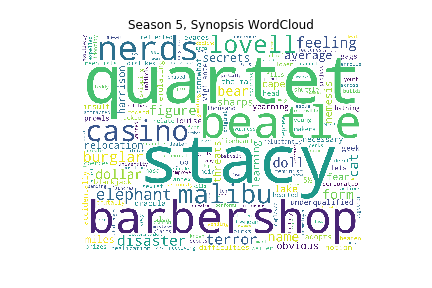
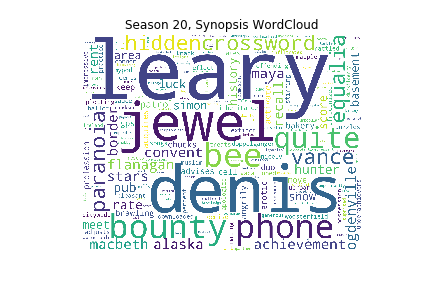
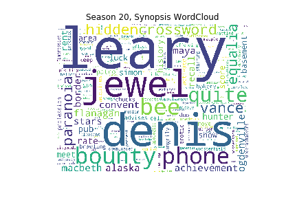
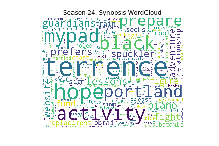
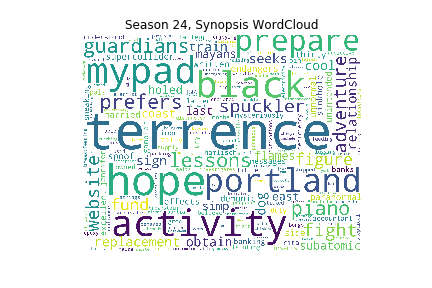
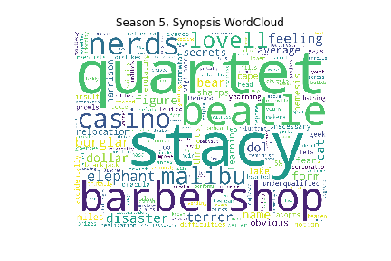
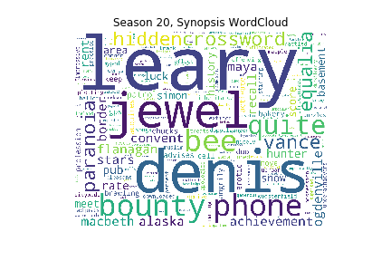
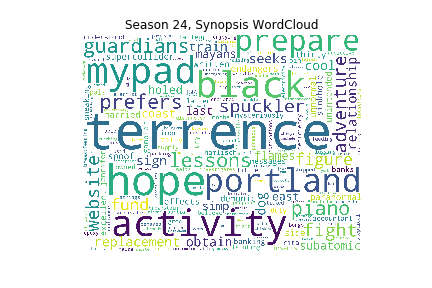

 
  

For each season's script and synopsis the TF-IDF score is computed. It assigns a score to every word in a document: that score indicates how important is the word to the document itself combined with how typical that word is of the document, i.e. how much that word distinguishes that particular document from the others (so if a word is present in only one document a lot of times it'll have a very high score).
Here every WordCloud produced is displayed. The dropdown menu will let the reader choose which ones to display:


